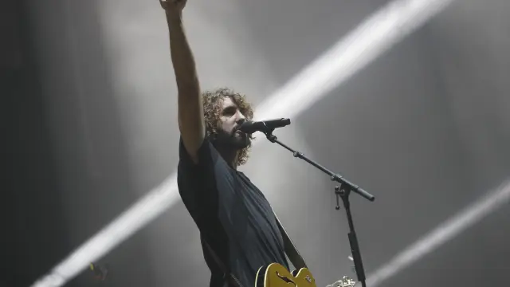

Canciones de despedidaGoodbye songs

Pronto se cumplirán 2 años desde que Izal nos dijera adiós en aquel último concierto en el WiZink Center de Madrid. Después de 12 años de música, 5 discos e innumerables conciertos. Curiosamente, ese adiós nos lo dijeron muchos años antes comenzando su segundo disco con una Despedida. Despedida que tuvo que esperar 9 años para que entendiéramos todo lo que significaba.
Y pensándolo bien, ¿por qué esperar al final para escribir una despedida? ¿Por qué arriesgarnos a que nos pille desprevenidos, sin fuerzas, con dudas o resentimientos? Mucho mejor escribirla al inicio, cuando seguimos enamorados, eufóricos y viviendo en esos días tan rápidos, tan fáciles y tan intrépidos.
Porque queramos o no, cuando comenzamos algo por muy bonito que sea, comenzamos una cuenta atrás. Y aunque al comienzo nos sintamos superhéroes, llegará el día en que las balas no reboten o los malos sean más fuertes o volar no sea tan fácil o conozcan nuestros planes.
Por eso hoy, después de algo más de año y medio en Celonis, de una época de crecimiento, retos y momentos felices, quiero buscar esa pausa para valorar lo que tengo ahora. Hacer balance y prometerme seguir disfrutando hasta el final.
Quiero ir preparando mi fiesta de despedida en la que yo y todos aquellos que me acompañen estos años podamos recordar los buenos tiempos. Escribir esta “canción” por cada uno de aquellos días tan plácidos, ingrávidos, tan espléndidos, tan románticos… y que se marcharán.
La Increíble Historia Del Hombre Que Podía Volar Pero No Sabía Cómo
Si tengo que calificar esta historia con un adjetivo sería “increíble”. Increíble porque por mucho que empezara con la ilusión de una nueva etapa y la confianza de conocer personas a las que admiraba dentro, la experiencia me pedía prudencia y serenidad. Me pedía no ilusionarme demasiado e ir viviendo día a día, poco a poco. Después de algún batacazo y con la perspectiva de la edad, tenía muchas dudas de volver a vivir y encontrar ciertas cosas que ya tuve la suerte de vivir en mi vida laboral.
Empezaba con vértigo, tras una etapa complicada, volviendo al rol de manager y haciéndolo por primera vez desde fuera, sin conocer el producto y al equipo, pero gracias a lo que encontré los primeros días pronto pude borrar estas preocupaciones. Me encontré con compañeros que me hicieron sentir en casa desde el primer día, un buen onboarding, con tiempo y recursos necesarios para conocer la empresa, cultura, negocio y producto, y también con una fiesta en la primera semana en la empresa, como no podía ser de otra forma aquí 😂.
Después vino el primer proyecto junto a dos compañeros, para comenzar desde lo técnico, ganar conocimientos, irme adaptando a procesos y herramientas, y construir relaciones con el equipo y compañeros poco a poco. El proyecto fue bien y el equipo fue creciendo y fuimos capaces de ir construyendo nuestro espacio seguro, con confianza para ayudarnos, debatir y crecer. También fui conociendo otras personas de mi área, oficina y empresa geniales a las que admiro y de las que tengo la suerte de poder aprender.
La guinda del pastel de estos primeros meses vino con la organización del Gathering de Producto e Ingeniería de España en Junio. Preparamos un día para conocernos más y disfrutar y, por lo que parece, salió bastante bien. Mi carta de presentación para muchos compañeros que aún no había tenido oportunidad de conocer fue ejercer de anfitrión ese día para que pudieran conectar unos con otros y disfrutar del día. Y para ser sincero, no se me ocurre mejor carta de presentación que ponerme al servicio de los demás para que las personas puedan construir relaciones y disfrutar su trabajo.
Claro que hubo días de preocupaciones, horas perdidas luchando contra la ansiedad, nervios, taquicardias, sudores y crujidos, pero fue genial tener personas a mi alrededor que me decían que estuviera tranquilo y disfrutara del camino. Fue genial poder coger así los mandos, salir de la órbita oscura y volar alto al hiperespacio. Entre planetas de mares helados, veranos de soles blancos y, por supuesto, con un poco de Bowie para disfrutar de estos primeros meses en Celonis.
Copacabana
El periodo de prueba terminó y cosas que día a día me frustraba por no conseguir, llegaron tras unos meses, en lo que para mí fue un parpadeo, y se convirtieron en más de lo que hubiera imaginado. Y es que solemos sobreestimar lo que podemos hacer a corto plazo y subestimar lo que podemos conseguir a largo.
Llegué a mi Copacabana. Tras estos primeros meses de inseguridades y ajetreo, se fue el miedo y llegó la calma. Logré la serenidad y claridad para seguir trabajando con lo que había aprendido, creciendo y consiguiendo retos que venían por delante.
Vinieron nuevos proyectos, mi primer Celosphere, la oportunidad de hacer crecer a una persona de mi equipo hacia manager, nuevas incorporaciones, primeros team buildings, un segundo Gathering de Producto e Ingeniería y mucho más. Momentos de pensar despacio, querer deprisa y caminar con la frente alta. Y algunos recuerdos de momentos que fueron perfectos, Copacabana y claqué.
Hogar
Tras estos primeros meses de viaje, de novedades y tantas cosas por aprender, hoy me siento en casa y creo que es lo más bonito y difícil que se puede llegar a decir de una empresa. Y no es que me esté poniendo cómodo o empiece a ver techos y paredes a los que me tengo que adaptar. Sé que seguirán llegando retos, logros, aprendizajes y celebraciones. Sé que habrá momentos que me saquen de mi zona de confort, me frustren y me hagan dudar. Pero tengo un buen lugar al que volver.
Entré a este mundo laboral, como imagino que muchos otros, amando la tecnología y, ahora entiendo, algo eclipsado por ella. Entré pensando en desarrollar retos imposibles, dominar campos y tecnologías complejas, lanzar productos que cambian el mundo. Y después de más de 12 años aquí y sintiéndome afortunado por la carrera profesional que he tenido y los proyectos en los que he participado, debo reconocer que la tecnología fue lo de menos… Si pienso bien puedo acordarme de proyectos especiales y retos que me sentí satisfecho por conseguir. Pero lo que forma parte de mis recuerdos y ha hecho este viaje tan especial han sido las personas.
Por eso lo que más orgullo y felicidad me puede dar es que haya personas que se acuerden de mí y de cómo las hice sentir, y es a lo que quiero dedicar mis mayores energías de aquí en adelante. Que haya personas que me recuerden porque les ayudé a crecer, a salir de un momento malo, a lanzar una idea en la que creían, a avanzar en su carrera… Quiero centrarme en comprender, empatizar, colaborar, ayudar y hacer hogar allí donde esté.
Y de momento no quiero pensar en los días que me quedan dentro de esta casa. Hoy me quedo con los pies más pegados a este suelo, que es mío y a la vez del resto, de la gente que hace de esta empresa mi hogar.
El baile
Después de este algo más de año y medio, mirando atrás, aún no termino de creerme lo que he encontrado aquí y lo que he conseguido hasta ahora. Tampoco puedo imaginarme todo lo que me queda por delante. Y creo que es la primera vez que puedo decir esto de una empresa llevando el tiempo que llevo.
Soy consciente de que a veces me pudo el drama y me dejé llevar por el miedo a que nadie me dijera adiós al irme, cerrando etapas antes de tiempo mientras aún me sentía querido y valioso. Pero hoy me siento más fuerte y maduro para aguantar ese miedo y seguir aportando y contribuyendo aquí.
Quiero que esta canción de despedida se transforme en mucho más cuando llegue el momento de irse. Quiero no olvidarme de lo importante y concentrar mis energías allí. Vivir más en el presente y disfrutarlo al máximo. Evitar los miedos y la ansiedad de lo que podría pasar y nunca llega. Y cuando llegue el momento, poder revivir buenos tiempos, días perfectos de luces y cálidos colores a los que volver una y otra vez. Que cuando llegue el fin de los finales, esta casa esté llena de amigos, recuerdos y canciones que nos digan tanto. Y que mientras todo se derrumbe, a nosotros nos vean bailando. Seguir bailando, y disfrutando, hasta que todo acabe.
*Durante el artículo he utilizado letras originales de IZAL como homenaje a uno de mis grupos favoritos de siempre
It will soon be 2 years since Izal said goodbye to us at that last concert at the WiZink Center in Madrid. After 12 years of music, 5 albums and countless concerts. Curiously, they told us that goodbye many years earlier, opening their second album with a Farewell. A farewell that had to wait 9 years for us to understand everything it meant.
And come to think of it, why wait until the end to write a goodbye? Why risk it catching us off guard, with no strength, full of doubts or resentment? Far better to write it at the start, when we're still in love, euphoric, and living through those days so fast, so easy and so bold.
Because whether we like it or not, when we begin something, however beautiful it may be, we start a countdown. And even if at the beginning we feel like superheroes, the day will come when the bullets don't bounce off, or the villains are stronger, or flying isn't so easy, or they figure out our plans.
That's why today, after a little over a year and a half at Celonis, after a time of growth, challenges and happy moments, I want to find that pause to value what I have now. To take stock and promise myself to keep enjoying it to the end.
I want to start preparing my farewell party where I and everyone who's been with me these years can remember the good times. To write this “song” for each of those days so placid, weightless, so splendid, so romantic… and that will go away.
La Increíble Historia Del Hombre Que Podía Volar Pero No Sabía Cómo
If I had to describe this story with one adjective it would be “incredible”. Incredible because, however much it began with the excitement of a new stage and the confidence of knowing people I admired inside, experience was asking me for caution and composure. It was asking me not to get my hopes up too high and to take it day by day, little by little. After a few hard knocks and with the perspective of age, I had many doubts about living again and finding certain things I'd already been lucky enough to experience in my working life.
It began with vertigo, after a complicated stage, returning to the manager role and doing it for the first time from the outside, without knowing the product or the team, but thanks to what I found in those first days I was soon able to erase these worries. I found colleagues who made me feel at home from day one, a good onboarding, with the time and resources needed to get to know the company, culture, business and product, and also a party in my first week at the company, as it could only be here 😂.
Then came the first project alongside two colleagues, to start from the technical side, gain knowledge, gradually adapt to processes and tools, and build relationships with the team and colleagues little by little. The project went well and the team kept growing and we were able to build our safe space, with the trust to help each other, debate and grow. I also got to know other great people in my area, office and company whom I admire and from whom I'm lucky to be able to learn.
The icing on the cake of these first months came with organizing the Product and Engineering Gathering for Spain in June. We prepared a day to get to know each other better and have fun and, by the looks of it, it went pretty well. My calling card for many colleagues I hadn't yet had the chance to meet was acting as host that day so they could connect with one another and enjoy the day. And to be honest, I can't think of a better calling card than putting myself at the service of others so that people can build relationships and enjoy their work.
Of course there were days of worry, hours lost battling anxiety, nerves, palpitations, sweats and cracks, but it was great to have people around me telling me to stay calm and enjoy the journey. It was great to take the controls like that, leave the dark orbit and fly high into hyperspace. Among planets of frozen seas, summers of white suns and, of course, with a little Bowie to enjoy these first months at Celonis.
Copacabana
The probation period ended and things I used to frustrate myself over day after day for not achieving arrived after a few months, in what for me was the blink of an eye, and turned into more than I would have imagined. The thing is, we tend to overestimate what we can do in the short term and underestimate what we can achieve in the long.
I reached my Copacabana. After those first months of insecurities and bustle, the fear left and calm arrived. I found the serenity and clarity to keep working with what I'd learned, growing and tackling the challenges that lay ahead.
New projects came, my first Celosphere, the chance to help someone on my team grow toward becoming a manager, new hires, first team buildings, a second Product and Engineering Gathering and much more. Moments to think slowly, want quickly and walk with my head held high. And some memories of moments that were perfect, Copacabana and tap dancing.
Hogar
After these first months of the journey, of new things and so much to learn, today I feel at home and I think it's the most beautiful and difficult thing you can come to say about a company. And it's not that I'm getting comfortable or starting to see ceilings and walls I have to adapt to. I know challenges, achievements, lessons and celebrations will keep coming. I know there'll be moments that take me out of my comfort zone, frustrate me and make me doubt. But I have a good place to come back to.
I entered this working world, like I imagine many others did, loving technology and, I now understand, somewhat eclipsed by it. I came in thinking about building impossible challenges, mastering complex fields and technologies, launching products that change the world. And after more than 12 years here and feeling fortunate for the career I've had and the projects I've taken part in, I have to admit that technology was the least of it… If I think hard I can remember special projects and challenges I felt satisfied to pull off. But what forms part of my memories and has made this journey so special has been the people.
That's why what can give me the most pride and happiness is for there to be people who remember me and how I made them feel, and that's what I want to devote my greatest energies to from here on. For there to be people who remember me because I helped them grow, get out of a bad moment, launch an idea they believed in, advance in their career… I want to focus on understanding, empathizing, collaborating, helping and making a home wherever I am.
And for now I don't want to think about the days I have left inside this home. Today I keep my feet more firmly on this ground, which is mine and at the same time everyone else's, of the people who make this company my home.
El baile
After this little over a year and a half, looking back, I still can't quite believe what I've found here and what I've achieved so far. Nor can I imagine all that lies ahead of me. And I think it's the first time I can say this about a company having been here as long as I have.
I'm aware that sometimes the drama got the better of me and I let myself be carried away by the fear that no one would say goodbye to me when I left, closing stages ahead of time while I still felt loved and valued. But today I feel stronger and more mature to withstand that fear and keep contributing here.
I want this goodbye song to turn into much more when the time comes to leave. I want not to forget what's important and to focus my energies there. To live more in the present and enjoy it to the fullest. To avoid the fears and anxiety of what might happen and never comes. And when the moment comes, to be able to relive good times, perfect days of lights and warm colors to return to again and again. So that when the end of endings arrives, this home is full of friends, memories and songs that mean so much to us. And that while everything collapses, they see us dancing. To keep dancing, and enjoying, until it all ends.
*Throughout the article I've used original IZAL lyrics as a tribute to one of my all-time favorite bands